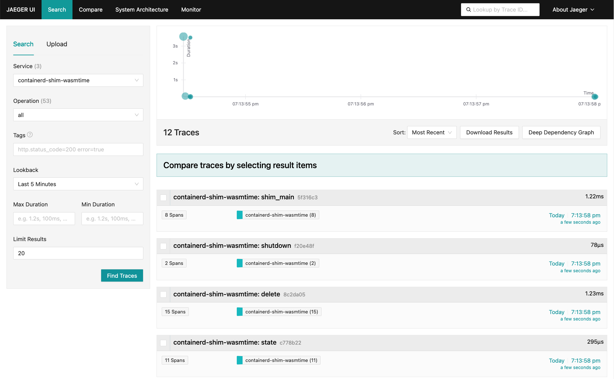

runwasi
This is a project to facilitate running wasm workloads managed by containerd either directly (ie. through ctr) or as directed by Kubelet via the CRI plugin. It is intended to be a (rust) library that you can take and integrate with your wasm host. Included in the repository is a PoC for running a plain wasi host (ie. no extra host functions except to support wasi system calls).
Community
- If you haven't joined the CNCF slack yet, you can do so here.
- Come join us on our slack channel #runwasi on the CNCF slack.
- Public Community Call on Tuesdays every other week at 9:00 AM PT: Zoom, Meeting Notes
Usage
runwasi is intended to be consumed as a library to be linked to from your own wasm host implementation. It creates one shim process per container or k8s pod.
You need to implement a trait to teach runwasi how to use your wasm host.
There are two ways to do this:
- implementing the
sandbox::Instancetrait - or implementing the
container::Enginetrait
The most flexible but complex is the sandbox::Instance trait:
#![allow(unused)] fn main() { pub trait Instance { /// The WASI engine type type Engine: Send + Sync + Clone; /// Create a new instance fn new(id: String, cfg: &InstanceConfig) -> Self; /// Start the instance /// The returned value should be a unique ID (such as a PID) for the instance. /// Nothing internally should be using this ID, but it is returned to containerd where a user may want to use it. fn start(&self) -> Result<u32, Error>; /// Send a signal to the instance fn kill(&self, signal: u32) -> Result<(), Error>; /// Delete any reference to the instance /// This is called after the instance has exited. fn delete(&self) -> Result<(), Error>; /// Wait for the instance to exit /// The waiter is used to send the exit code and time back to the caller /// Ideally this would just be a blocking call with a normal result, however /// because of how this is called from a thread it causes issues with lifetimes of the trait implementer. fn wait(&self, waiter: &Wait) -> Result<(), Error>; } }
The container::Engine trait provides a simplified API:
#![allow(unused)] fn main() { pub trait Engine: Clone + Send + Sync + 'static { /// The name to use for this engine fn name() -> &'static str; /// Run a WebAssembly container fn run_wasi(&self, ctx: &impl RuntimeContext, stdio: Stdio) -> Result<i32>; /// Check that the runtime can run the container. /// This checks runs after the container creation and before the container starts. /// By default it checks that the wasi_entrypoint is either: /// * a OCI image with wasm layers /// * a file with the `wasm` filetype header /// * a parsable `wat` file. fn can_handle(&self, ctx: &impl RuntimeContext) -> Result<()> { /* default implementation*/ } } }
After implementing container::Engine you can use container::Instance<impl container::Engine>, which implements the sandbox::Instance trait.
To use your implementation in "normal" mode, you'll need to create a binary which has a main that looks something like this:
use containerd_shim as shim; use containerd_shim_wasm::sandbox::{ShimCli, Instance} struct MyInstance { // ... } impl Instance for MyInstance { // ... } fn main() { shim::run::<ShimCli<MyInstance>>("io.containerd.myshim.v1", opts); }
or when using the container::Engine trait, like this:
use containerd_shim as shim; use containerd_shim_wasm::{sandbox::ShimCli, container::{Instance, Engine}} struct MyEngine { // ... } impl Engine for MyEngine { // ... } fn main() { shim::run::<ShimCli<Instance<MyEngine>>>("io.containerd.myshim.v1", opts); }
Note you can implement your own ShimCli if you like and customize your wasm engine and other things. I encourage you to checkout how that is implemented.
The shim binary just needs to be installed into $PATH (as seen by the containerd process) with a binary name like containerd-shim-myshim-v1.
Check out these projects that build on top of runwasi:
Components
- containerd-shim-[ wasmedge | wasmtime | wasmer | wamr ]-v1
This is a containerd shim which runs wasm workloads in WasmEdge or Wasmtime or Wasmer.
You can use it with containerd's ctr by specifying --runtime=io.containerd.[ wasmedge | wasmtime | wasmer | wamr ].v1 when creating the container.
And make sure the shim binary must be in $PATH (that is the $PATH that containerd sees). Usually you just run make install after make build.
build shim with wasmedge we need install library first
This shim runs one per pod.
Demo
Installing the shims for use with Containerd
Make sure you have installed dependencies and install the shims:
make build
sudo make install
Note:
make buildwill only build one binary. Themake installcommand copies the binary to $PATH and uses symlinks to create all the component described above.
Pull the test image:
make pull-app
Demo 1 using container image that contains a Wasm module.
Run it with sudo ctr run --rm --runtime=io.containerd.[ wasmedge | wasmtime | wasmer | wamr ].v1 ghcr.io/containerd/runwasi/wasi-demo-app:latest testwasm /wasi-demo-app.wasm echo 'hello'. You should see some output repeated like:
sudo ctr run --rm --runtime=io.containerd.wasmtime.v1 ghcr.io/containerd/runwasi/wasi-demo-app:latest testwasm
This is a song that never ends.
Yes, it goes on and on my friends.
Some people started singing it not knowing what it was,
So they'll continue singing it forever just because...
This is a song that never ends.
Yes, it goes on and on my friends.
Some people started singing it not knowing what it was,
So they'll continue singing it forever just because...
(...)
To kill the process, you can run in other session: sudo ctr task kill -s SIGKILL testwasm.
The test binary supports commands for different type of functionality, check crates/wasi-demo-app/src/main.rs to try it out.
Demo 2 using OCI Images with custom WASM layers
The previous demos run with an OCI Container image containing the wasm module in the file system. Another option is to provide a cross-platform OCI Image that that will not have the wasm module or components in the file system of the container that wraps the wasmtime/wasmedge process. This OCI Image with custom WASM layers can be run across any platform and provides for de-duplication in the Containerd content store among other benefits. To build OCI images using your own images you can use the oci-tar-builder
To learn more about this approach checkout the design document.
Note: This requires containerd 1.7.7+ and 1.6.25+. If you do not have these patches for both
containerdandctryou will end up with an error message such asmismatched image rootfs and manifest layersat the import and run steps. Latest versions of k3s and kind have the necessary containerd versions.
Pull the OCI image with WASM layers image:
make pull
Run the image with sudo ctr run --rm --runtime=io.containerd.[ wasmedge | wasmtime | wasmer | wamr ].v1 ghcr.io/containerd/runwasi/wasi-demo-oci:latest testwasmoci
sudo ctr run --rm --runtime=io.containerd.wasmtime.v1 ghcr.io/containerd/runwasi/wasi-demo-oci:latest testwasmoci wasi-demo-oci.wasm echo 'hello'
hello
exiting
Demo 3 using Wasm OCI Artifact
The CNCF tag-runtime wasm working group has a OCI Artifact format for Wasm. This is a new Artifact type that enable the usage across projects beyond just runwasi, see the https://tag-runtime.cncf.io/wgs/wasm/deliverables/wasm-oci-artifact/#implementations
make test/k8s-oci-wasmtime
note: We are using a kubernetes cluster to run here since containerd's ctr has a bug that results in ctr:
unknown image config media type application/vnd.wasm.config.v0+json
Demo 4: Running on Kubernetes
You can run WebAssembly workloads on Kubernetes using either Kind or k3s.
Using Kind
- Install and configure dependencies:
curl -Lo ./kind https://kind.sigs.k8s.io/dl/v0.21.0/kind-linux-amd64
chmod +x ./kind
sudo mv ./kind /usr/local/bin/
make build-wasmtime
sudo make install-wasmtime
- Create a Kind configuration:
# kind-config.yaml
kind: Cluster
apiVersion: kind.x-k8s.io/v1alpha4
name: runwasi-cluster
nodes:
- role: control-plane
extraMounts:
- hostPath: /usr/local/bin/containerd-shim-wasmtime-v1
containerPath: /usr/local/bin/containerd-shim-wasmtime-v1
- Create and configure the cluster:
kind create cluster --name runwasi-cluster --config kind-config.yaml
kubectl cluster-info --context kind-runwasi-cluster
cat << EOF | docker exec -i runwasi-cluster-control-plane tee /etc/containerd/config.toml
[plugins."io.containerd.grpc.v1.cri".containerd.runtimes.wasm]
runtime_type = "io.containerd.wasmtime.v1"
EOF
docker exec runwasi-cluster-control-plane systemctl restart containerd
- Deploy the demo application:
kubectl --context kind-runwasi-cluster apply -f test/k8s/deploy.yaml
- Check the logs:
kubectl --context kind-runwasi-cluster logs -l app=wasi-demo
where you should see the output of the demo application:
This is a song that never ends.
Yes, it goes on and on my friends.
Some people started singing it not knowing what it was,
So they'll continue singing it forever just because...
Using k3s
- Install k3s and build the shim:
curl -sfL https://get.k3s.io | sh -
make build-wasmtime
sudo make install-wasmtime
- Configure k3s to use the Wasm runtime:
sudo mkdir -p /var/lib/rancher/k3s/agent/etc/containerd/
cat << EOF | sudo tee -a /var/lib/rancher/k3s/agent/etc/containerd/config.toml.tmpl
[plugins."io.containerd.grpc.v1.cri".containerd.runtimes.wasm]
runtime_type = "io.containerd.wasmtime.v1"
EOF
sudo systemctl restart k3s
- Deploy the demo application:
sudo k3s kubectl apply -f test/k8s/deploy.yaml
- Check the deployment:
sudo k3s kubectl wait deployment wasi-demo --for condition=Available=True --timeout=90s
sudo k3s kubectl get pods
sudo k3s kubectl logs -l app=wasi-demo
You should see "This is a song that never ends." repeated in the logs.
- Clean up when done:
sudo k3s kubectl delete -f test/k8s/deploy.yaml
# Optionally uninstall k3s
/usr/local/bin/k3s-uninstall.sh
The deploy.yaml file
The deployment includes:
apiVersion: node.k8s.io/v1
kind: RuntimeClass
metadata:
name: wasm
handler: wasm
---
apiVersion: apps/v1
kind: Deployment
metadata:
name: wasi-demo
spec:
# ...
template:
spec:
runtimeClassName: wasm # Use the wasm runtime class
containers:
- name: demo
image: ghcr.io/containerd/runwasi/wasi-demo-app:latest
To see demos for other runtimes, replace wasmtime with wasmedge, wasmer, or wamr in the above commands.
In addition, check out the Kubernetes + Containerd + Runwasi for more on how to run WasmEdge on Kubernetes.
WASI/HTTP Demo for wasmtime-shim
See wasmtime-shim documentation.
Contributing
To begin contributing, learn to build and test the project or to add a new shim please read our CONTRIBUTING.md
Contributors' Guide
This guide will help familiarize contributors to the containerd/runwasi repository.
Prerequisite
First read the containerd project's general guidelines around contribution which apply to all containerd projects.
Setting up your local environment
At a minimum, the Rust toolchain. When using rustup the correct toolchain version is picked up from the rust-toolchain.toml so you don't need to worry about the version.
curl --proto '=https' --tlsv1.2 -sSf https://sh.rustup.rs | sh
There are a few helper scripts that will install and configure required packages based on your OS. The end-to-end tests require a static binary, so installing cross-rs is recommended.
If on ubuntu/debian you can use the following script. Refer to youki's documentation for other systems.
./scripts/setup-linux.sh
If on Windows use (use git BASH terminal which has shell emulator)
./scripts/setup-windows.sh
If you choose to always build with cross, you don't need any of these requirements above as they will be provided via the cross container. This does require docker or podman. Refer to the cross getting started page for more details.
Install cross:
scripts/setup-cross.sh
Project structure
There are several projects in the repository:
containerd-shim-wasm- main library that is used by runtimes to create shims. Most of the shared code lives here.containerd-shim-wasm-test-modules- library with wasm test modules used in testing frameworkcontainerd-shim-<runtime>- shims per runtime (wasmtime, wasmedge, wasmer, wamr, etc). These produce binaries that are the shims which containerd talks too.oci-tar-builder- library and executable that helps build OCI tar files.wasi-demo-app- wasm application that is used for demos and testing.
Project architecture

The Containerd "shim" is a daemon process that serves Task Service API. It listens on a socket to receive ttRPC commands from Containerd, allowing for lifecycle management for containers (create, start, stop, etc.). Runwasi's containerd-shim-wasm library is designed to easily author your own shim binaries that handle Wasm modules.
Runwasi supports two types of engine:
- WebAssembly / WASI Engine: The WebAssembly engine executes Wasm modules or components in an containerized process.
- Youki Container Engine: The Youki engine manages OCI-compliant container workloads. It offers functionality analogous to runc, including lifecycle operations for containers (create, start, stop, etc.).
Runwasi is able to automatically detect the type of the workloads and decide either of the two modes to execute. This allows runwasi shims to be able to run WebAssembly workloads side-by-side with container workloads.
Building the project
To build all the shims in this repository:
make build
To build a shim for specific runtime (wasmtime, wasmer, wasmedge, wamr, etc):
make build-<runtime>
By default the runtimes will build for your current OS and architecture. If you want to build for a specific OS and architecture you can specify TARGET, where it matches a target in Cross.toml. If your target doesn't match your host OS and architecture Cross will be used. As an example will build a static binary:
TARGET=x86_64-unknown-linux-musl make build
Running tests
Unit tests
Unit tests are run via make test or for a specific runtime make test-<runtime>. On linux the tests will run using sudo. This is configured in the runner field in .cargo/config.toml
You should see some output like:
make test
running 3 tests
test instance::tests::test_maybe_open_stdio ... ok
test instance::wasitest::test_delete_after_create ... ok
test instance::wasitest::test_wasi ... ok
Run individual test via cargo adding RUST_LOG=trace (adjust the level of logging as needed) to see shim output. Also adjust the test name as needed.
RUST_LOG=DEBUG cargo test --package containerd-shim-wasmtime --lib -- wasmtime_tests::test_hello_world --exact --nocapture
End to End tests
The e2e test run on k3s and kind. A test image is built using oci-tar-builder and is loaded onto the clusters. This test image is not pushed to an external registry so be sure to use the Makefile targets to build the image and load it on the cluster.
The deployment file in test/k8s/Dockerfile is run and verified that it deploys and runs successfully. To execute the e2e tests in either kind or k3s:
make test/k8s-<runtime> # runs using kind
make test/k3s-<runtime>
OCI Wasm image requires containerd 1.7.7+ and can be tested with:
make test/k8s-oci-<runtime>
Building the test image
This builds a wasm application and packages it in an OCI format:
make test-image
Code style
We use nightly rustfmt and clippy for most linting rules. They are installed automatically with rustup. Use the check makefile target to run these tools and verify your code matches the expected style.
make check
You can auto-fix most styles using
make fix
Adding new features
Most features will likely have most of the code in the containerd-shim-wasm project and a few runtime specific additions to each runtime shim. The general expectation is that the feature should be added to all runtimes. We will evaluate on a case by case basis exceptions, where runtimes may not be able to support a given feature or requires changes that make it hard to review. In those cases we it may make sense to implement in follow up PR's for other runtimes.
A tip for developing a new feature is to implement it and test it with one runtime you are familiar with then add it to all the runtimes. This makes it easier to test and iterate before making changes across all the runtimes.
Any changes made to the containerd-shim-wasm crate needs to be documented in the CHANGELOG.md file following the Keep a Changelog format.
Adding new shims
We welcome new shims, though you can also host them in your own repositories as well and use the coantainerd-shim-wasm crate. We recognize that the project is moving fast and having them in this repository can reduce the need for changes as well for discoverability.
Please open an issue before submitting a PR for discussion to make sure it is a good fit. As a general rule, we want shims to be adopting WASI spec (this is after all called runwasi :-)). In the future we may require shims in the repository to pass WASI compliance tests when the standards mature more. See https://github.com/containerd/runwasi/issues/338 for more discussion.
Since we are not experts in every runtime we also need a commitment from the runtime owners to contribute to maintenance of the shim.
Removing Shims
This is a fast moving space, with lots of innovation happening and some shims may eventually need to be removed.
A Shim implementation maybe subject to removal if:
- If a shim runtime has not been maintained for 6 months it will be subject to removal.
- If required changes to the runtime can't be merged or not supported by runtime maintainers.
- If it falls behind in new features added to the
containerd-shim-wasmdue to lack of maintenance
Before removal:
- We will create an issue in the repository, pinned to the top.
- Send notification in our slack channel
- make best effort to contact the maintainers (agreed to when adding the shim)
After 1 month of the issue being up, if no maintainer is found we will remove the shim from the project.
In the case where immediate actions are required we may remove a shim from the CI signal to unblock progress on a feature or bug. This will be done on a case by case basis when needing to resolve an issue immediately. We will open an issue to track the removal from CI and if we are not able to resolved (or make progress on resolving) with in the next two weeks we will start the steps for removal.
Getting in touch
There is a lot going on in the project. If you get lost, stop by our slack and ask questions!
Documentation website
This project uses the mdBook tool to generate a documentation website from markdown files. The website is hosted on GitHub Pages and is available at the following URL: https://containerd.github.io/runwasi/.
Building the documentation
To build the documentation, you need to have the mdbook tool installed. You
can install it using the following command:
cargo install mdbook
Once you have mdbook installed, you can build the documentation by running the
following command:
mdbook build
This will generate the documentation in the book directory. You can verify
locally by running:
mdbook serve
which will start a local web server at http://localhost:3000 where you can
view the documentation.
Contributing
If you would like to contribute to the documentation, you can do so by editing
the markdown files in the src directory. Once you have made your changes, you
can build the documentation as described above and verify that your changes are
correct.
If you are happy with your changes, you can submit a pull request to the main
branch of the repository. Once your pull request is merged, the changes will be
automatically published to the documentation website.
Deploying the documentation
The documentation is automatically deployed to GitHub Pages when changes are
merged to the main branch.
To deploy the documentation, the following github actions are used:
- actions-mdbook for building the documentation.
- actions-gh-pages for deploying the documentation to GitHub Pages.
Release Process
This document describes the steps to release a new version of the crate or wasi-demo-app images.
Table of Contents
Crate Release Process
Overview
To create a new release, either run the release.yml workflow as a workload_dispatch trigger through the GitHub UI, or via the following command substituting the proper values for crate and version.
gh workflow run release.yml -f dry_run=true -f crate=containerd-shim-wasm -f version=0.4.0
Input Values for Release.yml
crate:[string] the name of the crate within the runwasi project. It should be a directory under./crates.version:[string] the version of the crate to stamp, tag, and release (e.g., 1.0.0, 0.6.0-rc1)dry_run:[boolean] a flag that causes the workflow to run all step except ones that would tag or push artifacts.
Crate Release Sequence
Must release the creates in this order due to dependencies:
containerd-shim-wasm- All runtime-related crates.
Release Steps
- Open a PR to bump crate versions and dependency versions in
Cargo.tomlfor that crate, and change the "Unreleased" section in theCHANGELOG.mdto the new version. - PR can be merged after 2 LGTMs
- Run the release workflow for the dependent crate. (e.g.
containerd-shim-wasm/v0.2.0wherecrate=containerd-shim-wasmandversion=0.2.0) - Wait for the release workflow to complete
- Manually verify the release on crates.io and on the GitHub releases page (See Verify signing section for more details on verifying the release on GitHub releases page.)
- If this is the first time publishing this crate, see the First release of a crate section.
Note: If step 1 and/or 2 is skipped, the release workflow will fail because the version in the Cargo.toml will not match the tag.
For step 5, some crates have binaries, such as the containerd-shim-wasmtime crate. These binaries are built as part of the release workflow and uploaded to the GitHub release page. You can download the binaries from the release page and verify that they work as expected.
Local Development vs. Release
Locally, crates reference local paths. During release, they target published versions.
Use both path and version fields in the workspace Cargo.toml:
e.g.
containerd-shim-wasm = { path = "crates/containerd-shim-wasm", version = "0.4.0" }
Verify signing
The release pipeline uses cosign to sign the release blobs, if any. It uses Github's OIDC token to authenticate with Sigstore to prove identity and outputs a .bundle file, which contains a signature and a key. This file can be verified using cosign verify-blob command, providing the workflow tag and Github as the issuer. The full command looks like this (e.g. wasmtime shim):
cosign verify-blob --bundle containerd-shim-wasmtime-v1.bundle \
--certificate-identity https://github.com/containerd/runwasi/.github/workflows/release.yml@refs/tags/containerd-shim-wasmtime/<tag> \
--certificate-oidc-issuer https://token.actions.githubusercontent.com \
containerd-shim-wasmtime-v1
In the Github release page, please provide the above command in the instructions for the consumer to verify the release.
First time release of a crate
If the crate has never been published to crates.io before then ownership of the crate will need to be configured. The containerd/runwasi-committers team will need to be added as an owner of the crate. The release workflow will automatically invite the person who triggered the workflow run to be an owner of the crate. That person will need to accept the invite to be an owner of the crate and then manually add the containerd/runwasi-committers team as an owner of the crate.
cargo owner --add github:containerd:runwasi-committers <crate-name>
This assumes you've already done cargo login with your personal account.
Alternatively, the cargo cli does support setting the token via an environment variable, CARGO_REGISTRY_TOKEN or as a CLI flag.
Now all members of the containerd/runwasi-committers team will have access to manage the crate (after they have accepted the invite to the crate).
Release workflow summary
The workflow performs the following steps:
- Verifies inputs
- Verifies ability to push crates
- Updates the version of the crate to the version specified in the workflow input
- Build the crate to be released (determined by the tag), including any artifacts (e.g., associated binaries)
- Run the tests for that crate (and only that crate!)
- Publishes to the crates.io
- Tags the repository for the release
- Creates a GitHub release for that crate (attaching any artifacts)
The workflow utilizes a bot account (@containerd-runwasi-release-bot) to publish the crate to crates.io. The bot account is only used to get a limited-scope API token to publish the crate on crates.io. The token is stored as a secret in the repository and is only used by the release workflow.
wasi-demo-app Release Process
Overview
To release a new version of the wasi-demo-app images, run the release-wasi-demo-app.yml workflow using the following command, substituting the correct version:
gh workflow run release-wasi-demo-app.yml -f dry_run=false -f version=0.1.0
Verify signing
To verify the signature of the release, run the following command:
cosign verify ghcr.io/containerd/runwasi/wasi-demo-app:0.1.0 --certificate-identity https://github.com/containerd/runwasi/.github/workflows/sign.yml@refs/heads/main --certificate-oidc-issuer https://token.actions.githubusercontent.com
OCI pre-compilation
The OCI images layers are loaded from containerd. If the runtime supports pre-compilation the images will be precompiled and cached using the containerd content store.
graph TD
start[Task new]
imgconfig[Load image config from containerd]
iswasm{Arch==wasm?}
alreadycompiled{Does image label for shim runtime version exist? runwasi.io/precompiled/runtime/version}
startcontainer[Create Container]
precompiledenabled{Is precompiling enabled in shim?}
precompiledenabled2{Is precompiling enabled in shim?}
fetchcache[Fetch cached precompiled layer from containerd content store]
precompile[Precompile using wasm runtime]
loadoci[Load OCI layers from containerd]
storecache[Store precompiled layer in containerd content store]
start --> imgconfig --> iswasm
iswasm -- yes --> precompiledenabled
iswasm -- no. wasm will be loaded from file inside image --> startcontainer
precompiledenabled -- yes --> alreadycompiled
precompiledenabled -- no --> loadoci --> precompiledenabled2
alreadycompiled -- yes --> fetchcache --> startcontainer
alreadycompiled -- no --> loadoci
precompiledenabled2 -- yes --> precompile --> storecache --> startcontainer
precompiledenabled2 -- no --> startcontainer
Once a wasm module or component is pre-compiled it will remain in the containerd content store until the original image is removed from containerd. There is a small disk overhead associated with this but it reduces the complexity of managing stored versions during upgrades.
To view the images in containerd that have associated pre-compilations:
sudo ctr i ls | grep "runwasi.io"
ghcr.io/containerd/runwasi/wasi-demo-oci:latest application/vnd.oci.image.manifest.v1+json
sha256:60fccd77070dfeb682a1ebc742e9d677fc452b30a6b99188b081c968992394ce 2.4 MiB wasi/wasm
runwasi.io/precompiled/wasmtime/0.3.1=sha256:b36753ab5a46f26f6bedb81b8a7b489cede8fc7386f1398706782e225fd0a98e
# query for the sha in the label
sudo ctr content ls | grep "b36753ab5a46f26f6bedb81b8a7b489cede8fc7386f139870"
sha256:60fccd77070dfeb682a1ebc742e9d677fc452b30a6b99188b081c968992394ce 561B 2 months containerd.io/gc.ref.content.0=sha256:a3c18cd551d54d3cfbf67acc9e8f7ef5761e76827fe7c1ae163fca0193be88b3,containerd.io/gc.ref.content.config=sha256:85b7f2b562fe8665ec9d9e6d47ab0b24e2315627f5f558d298475c4038d71e8b,containerd.io/gc.ref.content.precompile=sha256:b36753ab5a46f26f6bedb81b8a7b489cede8fc7386f1398706782e225fd0a98e
sha256:b36753ab5a46f26f6bedb81b8a7b489cede8fc7386f1398706782e225fd0a98e 626.4kB 3 days runwasi.io/precompiled=sha256:60fccd77070dfeb682a1ebc742e9d677fc452b30a6b99188b081c968992394ce
OpenTelemetry
OpenTelemetry is a set of libraries, agents, and instrumentation to provide observability (metrics, logs and traces) in applications.
containerd-shim-wasm crate has a set of APIs to enable OpenTelemetry tracing in the shim. This document is a guide on how to use OpenTelemetry tracing in your shim.
Usage
Wasmtime shim v0.5.0 has OpenTelemetry tracing enabled by default
To use OpenTelemetry tracing in your shim, you need to use the opentelemetry feature in the containerd-shim-wasm crate.
containerd-shim-wasm = { workspace = true, features = ["opentelemetry"] }
Then, you may use the containerd_shim_wasm::sandbox::cli::shim_main function to run the shim with OpenTelemetry tracing.
fn main() { shim_main::<WasmtimeInstance>("wasmtime", version!(), revision!(), "v1", None); }
You may also use the containerd_shim_wasm::sandbox::shim::OtlpConfig struct to configure the OpenTelemetry tracing manually.
Running containerd with OpenTelemetry
You can configure / run containerd with OpenTelemetry tracing. Please refer to the containerd documentation for more information.
OTEL_EXPORTER_OTLP_ENDPOINT=http://localhost:4318
# by default, Containerd uses the `http/protobuf` protocol
Runwasi will automatically pick up the environment variables and start exporting traces to the specified endpoint.
Jeager Exporter
You may use Jeager exporter to see the traces in the Jeager UI.
docker run -d -p16686:16686 -p4317:4317 -p4318:4318 -e COLLECTOR_OTLP_ENABLED=true jaegertracing/all-in-one:latest
You can access the Jeager UI at http://localhost:16686.
Demo
Assuming you installed the containerd-shim-wasmtime-v1 shim binary and the demo wasm image following README.md instructions,
you can run the wasmtime shim with OpenTelemetry tracing by running the following command
sudo ctr run --net-host --rm --runtime=io.containerd.wasmtime.v1 ghcr.io/containerd/runwasi/wasi-demo-app:latest testwasm /wasi-demo-app.wasm sleep 3


Environment Variables
Runwasi uses the standard OTLP environment variables to configure the OTLP exporter endpoint. The following environment variables are supported:
OTEL_EXPORTER_OTLP_ENDPOINT - A base endpoint to send trace data to.
OTEL_EXPORTER_OTLP_TRACES_ENDPOINT - The endpoint to send trace data to. Overrides OTEL_EXPORTER_OTLP_ENDPOINT.
OTEL_EXPORTER_OTLP_PROTOCOL - A base protocol to use when sending trace data. Default is http/protobuf. Valid values are http/protobuf, grpc.
OTEL_EXPORTER_OTLP_TRACES_PROTOCOL - The protocol to use when sending trace data. Overrides OTEL_EXPORTER_OTLP_PROTOCOL.
OTEL_SDK_DISABLED - Disables the SDK if set to true.
OTEL_SERVICE_NAME - The name of the service.
Context Propagation
Runwasi uses the TRACECONTEXT environment variable to propagate the trace context between the parent shim process and the child. The trace context is a W3C Trace Context header.
Windows: Getting Started
Currently, runwasi depends on a Linux environment (i.e., because it has to wire up networking and rootfs mounts). Therefore, to run it on Windows, we recommend utilizing the Windows Subsystem for Linux (WSL).
To get started with WSL, see this.
Once you have your WSL environment set and you have cloned the runwasi repository, you will need to install Docker and the Docker Buildx plugin.
To install Docker and the Docker Buildx Plugin, see this to find specific installation instructions for your WSL distro.
Before proceeding, it's also recommended to install Docker Desktop on Windows and run it once.
To finish off installing pre-requisites, install Rust following this.
After following these steps and navigating to the runwasi directory in your terminal:
- run
make build, - run
make install, - run
make pull-app.
After this, you can execute an example, like: ctr run --rm --runtime=io.containerd.wasmtime.v1 ghcr.io/containerd/runwasi/wasi-demo-app:latest testwasm.
To kill the process from the example, you can run:
ctr task kill -s SIGKILL testwasm.
Building and developing on Windows
You need to install wasmedge, llvm and make. This can be done using winget, choco or manually. (note as of writing this winget doesn't have the latest package and will builds will fail). See .github/scripts/build-windows.sh for an example.
Once you have those dependencies you will need to set env:
$env:WASMEDGE_LIB_DIR="C:\Program Files\WasmEdge\lib"
$env:WASMEDGE_INCLUDE_DIR="C:\Program Files\WasmEdge\include"
Then you can run:
make build
Using VS code
If you are using VS Code for development you can use the following settings.json in the .vscode folder of the project:
{
"rust-analyzer.cargo.noDefaultFeatures": true,
"rust-analyzer.cargo.extraEnv": {
"WASMEDGE_LIB_DIR": "C:\\Program Files\\WasmEdge\\lib",
"WASMEDGE_INCLUDE_DIR": "C:\\Program Files\\WasmEdge\\include"
}
}